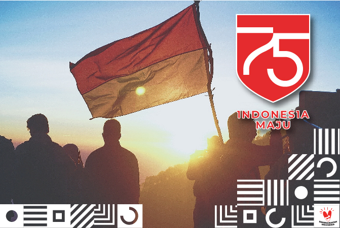

.png)
.png)
.png)
.png)
.png)

17 Agustus 2019
Upacara Kemerdekaan RI ke-74 di Istana Merdeka digelar pada Sabtu (17/8/2019) pagi. Berbeda dari sebelumnya peringatan detik-detik Proklamasi Kemerdekaan Republik Indonesia tahun ini dimulai dengan kirab bendera pusaka dan teks asli naskah proklamasi yang dimulai dari Monumen Nasional hingga Istana Merdeka.
17 Agustus 2018
Endang Suprapto, juga mantan pejuangan, lain lahi. Ia tak kuasa menahan tangis ketika mengikuti serangkaian HUT RI ke -71 di lapangan TNI Angkatan Laut, Jakarta, Kamis 17 Agustus 2018. Dengan berpakaian batik, tapi urung karena mata pria 86 tahun ini tak kuasa membendung air matanya yang mengucur. Kakek ini teringat temannya yang gugur.
17 Agustus 2017
Di tanggal 17 Agustus, secara serempak masyarakat di seluruh Indonesia menggelar upacara bendera. Namun yang membuat upacara bendera ini sangat spesial adalah karena melibatkan 1478 pasukan pengibar bendera di 79 titik di perairan Indonesia yang berbatasan langsung dengan Malaysia ini.
17 Agustus 2016
Selamat HUT ke-71 RI!", "Jayalah Indonesiaku, merdeka ke-71, Berkibarlah Sang Saka Merah Putih. Gema seabad silam bangsa Inggris datang meredah, pahang dengan peluru bersama senapan membunuh menangkap setiap pejuang, sekarang Indonesia bebas lepas dari penjajah, merdeka."
17 Agustus 2015
Bendera merah putih adalah simbol negara. Oleh karena itu, penggunaannya diatur oleh Undang-Undang (UU) Nomor 24 Tahun 2009 tentang Bendera, Bahasa, dan Lembaga Negara, serta Lagu Kebangsaan.Pada pasal 1, ayat (1) dijelaskan tentang bentuk Bendera Negara Republik Indonesia.
17 Agustus 2014
Bendera Indonesia memiliki makna filosofis. Merah berarti keberanian, sedangkan putih berarti kesucian. Selain itu, warna merah pun dikatakan melambangkan tubuh manusia, sedangkan putih melambangkan jiwa manusia..
 Resna Pangestu
Resna Pangestu  Resna calvin_wijaya30 Calvin Wijaya irfanardiansyah1116 Irfan Ardiansyah
Resna calvin_wijaya30 Calvin Wijaya irfanardiansyah1116 Irfan Ardiansyah Scan Me